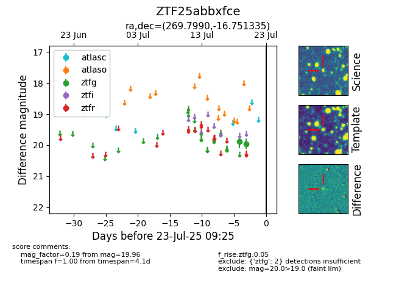

Target ZTF25abbxfce at 2025-07-23 12:37, see:
FINK: fink-portal.org/ZTF25abbxfce
Lasair: lasair-ztf.lsst.ac.uk/objects/ZTF25abbxfce
ALeRCE: alerce.online/object/ZTF25abbxfce
alt names
ZTF25abbxfce (ztf,fink)
coordinates:
equatorial (ra, dec) = (269.7990,-16.75134)
galactic (l, b) = (12.0865,+3.50651)
photometry
last ztfg=19.96
2 ztfg detections
